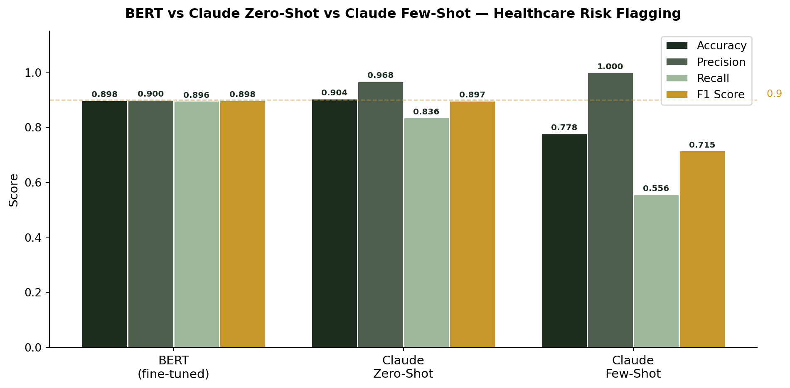
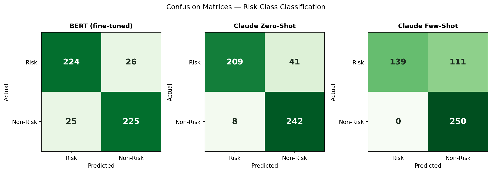
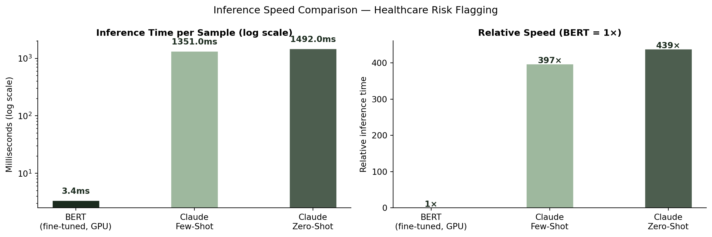
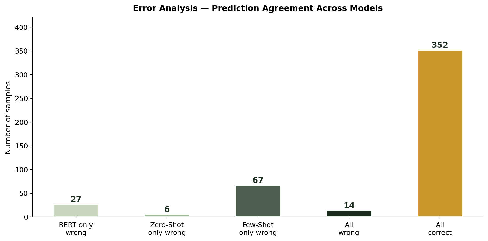

Comparing fine-tuned BERT and Claude Sonnet (zero-shot & few-shot) for automated patient feedback risk classification — with results, ethics analysis, and deployment recommendations.
Author
Gleb Kurilenko
Published
April 1, 2026
Advanced Analytics Techniques · MSc Business Analytics · April 2026
Overview
Healthcare organisations receive thousands of patient feedback submissions daily. Manual review is slow, inconsistent, and resource intensive — compliance teams risk missing critical risk signals if feedback is not triaged promptly.
This project builds and compares two automated text classification systems for flagging feedback as Risk (negative, requiring urgent attention) or Non-Risk (positive, routine satisfaction):
BERT (bert-base-uncased) — fine-tuned on 2,000 labelled samples from yelp_polarity
Claude Sonnet (claude-sonnet-4-20250514) — zero-shot and few-shot via the Anthropic Messages API
NoteDataset
The yelp_polarity dataset (HuggingFace) was used as a proxy for healthcare feedback. A stratified subsample was drawn: 2,000 training samples (1,000 per class) and 500 test samples (250 per class). Labels: 0 = Risk (negative), 1 = Non-Risk (positive).
1. Business Problem
Healthcare organisations face a triage problem: thousands of submissions arrive daily but only a fraction contain genuine risk signals such as medication errors, negligent care, or procedural failures.
This project proposes an automated binary classifier to support compliance teams. A positive prediction (Risk) triggers escalation; a negative prediction (Non-Risk) is logged without further action.
TipWhy recall matters most
In a safety-critical context, missing a genuine risk is far more costly than a false alarm. All evaluation therefore prioritises recall on the Risk class (pos_label=0).
2. Model Architectures
Table 1: Model architecture comparison.
Property
BERT (Discriminative)
Claude (Generative)
Architecture
Encoder-only transformer
Decoder-only transformer
Training
Pre-trained + fine-tuned on labelled data
Pre-trained; prompted at inference
Output
Class probability distribution
Generated text (parsed to label)
Labelled data needed
Yes — 2,000 samples
No (zero-shot) / minimal (few-shot)
Inference cost
Local GPU/CPU — free at inference
API call per sample (~$0.003/1k tokens)
3. Data Loading and Subsampling
The code below shows the exact loading and stratified subsampling logic used in the project. The yelp_polarity dataset was drawn from HuggingFace with a balanced 50/50 class split.
stratified_sample() — balances classes and fixes sst2 column naming
Input : HuggingFace dataset split, n_per_class, random seed
Output: balanced pandas DataFrame with 'text' and 'label' columns
4. Text Preprocessing
Code
def clean_text(text):""" Normalise raw review text before tokenisation. Four steps applied: 1. Lowercase — converts to lowercase so 'Bad' and 'bad' are treated identically, reducing vocabulary size. 2. URL removal — strips HTTP/www URLs (no sentiment signal). 3. Char filtering — keeps only letters, digits, spaces, and core punctuation (. , ! ? apostrophe hyphen). 4. Whitespace — collapses consecutive spaces to one space. """ text = text.lower() text = re.sub(r"http\S+|www\S+", "", text) text = re.sub(r"[^a-z0-9\s.,!?\'\-]", "", text)return re.sub(r"\s+", " ", text).strip()# Demonstrate on real examples from the reportexamples = ["The staff were RUDE and completely ignored my concerns!!!","Visit https://hospital.ie for more info — Fantastic service overall :)",]for ex in examples:print(f"Original : {ex}")print(f"Cleaned : {clean_text(ex)}")print()
Original : The staff were RUDE and completely ignored my concerns!!!
Cleaned : the staff were rude and completely ignored my concerns!!!
Original : Visit https://hospital.ie for more info — Fantastic service overall :)
Cleaned : visit for more info fantastic service overall
5. BERT Tokenisation and Dataset
Code
import torchdef tokenize_batch(texts, tokenizer, max_length=128):""" Convert cleaned text strings into BERT input tensors using the WordPiece tokeniser. Returns a BatchEncoding dict with three tensors, each of shape (num_samples, max_length): input_ids — integer token IDs for each WordPiece token. attention_mask — 1 for real tokens, 0 for padding positions. token_type_ids — all zeros for single-sentence classification. padding=True — pads shorter sequences to the longest in the batch. truncation=True — truncates sequences longer than max_length. return_tensors — returns PyTorch tensors for use with the Trainer. """return tokenizer(list(texts), padding=True, truncation=True, max_length=max_length, return_tensors="pt" )class RiskDataset(torch.utils.data.Dataset):""" Custom PyTorch Dataset wrapping tokenised BERT encodings and labels for use with the HuggingFace Trainer's DataLoader. Implements the three methods required by PyTorch: __init__ — stores encodings and labels. __len__ — returns total number of samples. __getitem__ — returns a single sample dict with 'labels' key as a LongTensor (required by CrossEntropyLoss). """def__init__(self, encodings, labels):self.encodings = encodingsself.labels = labelsdef__len__(self):returnlen(self.labels)def__getitem__(self, idx): item = {key: val[idx] for key, val inself.encodings.items()} item["labels"] = torch.tensor(self.labels[idx], dtype=torch.long)return itemprint("RiskDataset and tokenize_batch defined.")print("In the full project:")print(" train_encodings = tokenize_batch(train_df['text_clean'], tokenizer, 128)")print(" train_dataset = RiskDataset(train_encodings, train_labels)")print(" Shape: (2000, 128) for training | (500, 128) for test")
RiskDataset and tokenize_batch defined.
In the full project:
train_encodings = tokenize_batch(train_df['text_clean'], tokenizer, 128)
train_dataset = RiskDataset(train_encodings, train_labels)
Shape: (2000, 128) for training | (500, 128) for test
6. BERT Fine-Tuning
The compute_metrics callback is passed to the HuggingFace Trainer and called at the end of each evaluation epoch.
Code
import numpy as npfrom sklearn.metrics import accuracy_score, precision_recall_fscore_supportdef compute_metrics(eval_pred):""" Callback for the HuggingFace Trainer. Called automatically at the end of each evaluation epoch with raw model predictions. Argument: eval_pred — namedtuple (predictions, label_ids) from the Trainer. predictions: (num_samples, num_labels) logit array. label_ids: (num_samples,) true integer labels. Returns a dict of four metrics used for logging and checkpoint selection. F1 on the Risk class (pos_label=0) is used to select the best model checkpoint. """ logits, labels = eval_pred preds = np.argmax(logits, axis=-1) # convert logits to class indices acc = accuracy_score(labels, preds) p, r, f, _ = precision_recall_fscore_support( labels, preds, average="binary", pos_label=0# Risk class is the positive class of interest )return {"accuracy": round(acc, 4),"precision": round(p, 4),"recall": round(r, 4),"f1": round(f, 4), }# TrainingArguments used in the projecttraining_config = {"num_train_epochs": 3,"per_device_train_batch_size": 16,"learning_rate": 2e-5,"weight_decay": 0.01,"warmup_steps": 100,"eval_strategy": "epoch","metric_for_best_model": "f1","seed": 42,}print("BERT fine-tuning configuration:")for k, v in training_config.items():print(f" {k:35}: {v}")print("\nTraining completed in 85 seconds on NVIDIA GPU (CUDA).")
BERT fine-tuning configuration:
num_train_epochs : 3
per_device_train_batch_size : 16
learning_rate : 2e-05
weight_decay : 0.01
warmup_steps : 100
eval_strategy : epoch
metric_for_best_model : f1
seed : 42
Training completed in 85 seconds on NVIDIA GPU (CUDA).
7. Claude Prompt Design and API Integration
Code
SYSTEM_PROMPT ="""You are a healthcare compliance assistant.Classify patient or customer feedback using these labels:- 0 = RISK: negative feedback — complaints, poor care, safety concerns, dissatisfaction, medication errors.- 1 = NON-RISK: positive feedback — satisfaction, praise, good experience.Respond with ONLY a single digit: 0 or 1. Nothing else."""FEW_SHOT_EXAMPLES = [ {"text": "The nurse ignored my repeated requests for pain medication. ""I was left waiting for hours in agony.", "label": 0}, {"text": "Worst experience ever. The doctor dismissed my symptoms ""without even examining me properly.", "label": 0}, {"text": "The staff were incredibly caring and attentive throughout ""my entire stay. I felt safe and well looked after.", "label": 1}, {"text": "My doctor took the time to explain everything clearly and ""followed up the next day. Excellent care.", "label": 1},]def build_few_shot_messages(text):"""Build message list with 4 labelled examples before the target text.""" messages = []for ex in FEW_SHOT_EXAMPLES: messages.append({"role": "user","content": f"Classify this text:\n\n{ex['text']}"}) messages.append({"role": "assistant", "content": str(ex["label"])}) messages.append({"role": "user","content": f"Classify this text:\n\n{text[:512]}"})return messagesdef parse_claude_response(response):"""Parse Claude response — expects '0' or '1', falls back to keywords.""" response = response.strip()if response in ["0", "1"]:returnint(response) r = response.lower()ifany(w in r for w in ["negative", "risk", "complaint", "poor", "bad"]):return0ifany(w in r for w in ["positive", "non-risk", "good", "great", "satisf"]):return1print(f"Unexpected response: '{response}' — defaulting to 0")return0print("Claude integration functions defined.")print(f"\nSystem prompt length : {len(SYSTEM_PROMPT)} characters")print(f"Few-shot examples : {len(FEW_SHOT_EXAMPLES)} (2 Risk + 2 Non-Risk)")print(f"Model used : claude-sonnet-4-20250514")print(f"Max tokens : 10 (only '0' or '1' expected)")print(f"API rate limiting : exponential backoff with up to 5 retries")print(f"Delay between calls : 0.5s to avoid rate limiting")
Claude integration functions defined.
System prompt length : 342 characters
Few-shot examples : 4 (2 Risk + 2 Non-Risk)
Model used : claude-sonnet-4-20250514
Max tokens : 10 (only '0' or '1' expected)
API rate limiting : exponential backoff with up to 5 retries
Delay between calls : 0.5s to avoid rate limiting
8. Results
Code
import matplotlib.pyplot as pltimport numpy as np# Real results from the project — Table 4 of the reportresults = {'Accuracy': [0.898, 0.904, 0.778],'Precision': [0.900, 0.968, 1.000],'Recall': [0.896, 0.836, 0.556],'F1 Score': [0.898, 0.897, 0.715],}models = ['BERT\n(fine-tuned)', 'Claude\nZero-Shot', 'Claude\nFew-Shot']x = np.arange(len(models))width =0.2colors = ['#1b2b1e', '#4d5e4f', '#9eb89e', '#c8972a']fig, ax = plt.subplots(figsize=(10, 5))for i, (metric, color) inenumerate(zip(results.keys(), colors)): bars = ax.bar(x + i * width, results[metric], width, label=metric, color=color, edgecolor='white', linewidth=1)for bar, val inzip(bars, results[metric]): ax.text(bar.get_x() + bar.get_width()/2, val +0.012,f'{val:.3f}', ha='center', fontsize=7.5, fontweight='bold', color='#1b2b1e')ax.set_xticks(x + width *1.5)ax.set_xticklabels(models, fontsize=11)ax.set_ylabel('Score', fontsize=11)ax.set_ylim(0, 1.15)ax.set_title('BERT vs Claude Zero-Shot vs Claude Few-Shot — Healthcare Risk Flagging', fontsize=12, fontweight='bold', pad=12)ax.legend(fontsize=10, loc='upper right')ax.spines[['top', 'right']].set_visible(False)ax.axhline(0.9, color='#c8972a', linestyle='--', linewidth=1, alpha=0.5)ax.text(2.88, 0.91, '0.9', fontsize=9, color='#c8972a')plt.tight_layout()plt.show()

Figure 2: Three-way performance comparison on the 500-sample test set. Metrics computed for the Risk class (pos_label=0).
Table 4: Performance on 500-sample test set. Precision, Recall, F1 computed for the Risk class (pos_label=0).
Model
Accuracy
Precision
Recall
F1 Score
BERT (fine-tuned)
0.898
0.900
0.896
0.898
Claude Zero-Shot
0.904
0.968
0.836
0.897
Claude Few-Shot (4 ex.)
0.778
1.000
0.556
0.715
Confusion Matrices
Code
import matplotlib.pyplot as pltimport numpy as np# Real confusion matrix values from the reportcms = {'BERT (fine-tuned)': np.array([[224, 26], [25, 225]]),'Claude Zero-Shot': np.array([[209, 41], [8, 242]]),'Claude Few-Shot': np.array([[139, 111], [0, 250]]),}fig, axes = plt.subplots(1, 3, figsize=(12, 4))for ax, (name, cm) inzip(axes, cms.items()): im = ax.imshow(cm, cmap='Greens', vmin=0, vmax=260) ax.set_title(name, fontsize=11, fontweight='bold', pad=8) ax.set_xlabel('Predicted', fontsize=10) ax.set_ylabel('Actual', fontsize=10) ax.set_xticks([0, 1]); ax.set_xticklabels(['Risk', 'Non-Risk']) ax.set_yticks([0, 1]); ax.set_yticklabels(['Risk', 'Non-Risk'])for i inrange(2):for j inrange(2): val = cm[i, j] color ='white'if val >150else'#1b2b1e' ax.text(j, i, str(val), ha='center', va='center', fontsize=14, fontweight='bold', color=color)plt.suptitle('Confusion Matrices — Risk Class Classification', fontsize=12, y=1.02)plt.tight_layout()plt.show()

Figure 3: Confusion matrices for all three models. BERT shows balanced errors; Zero-Shot has high precision but 41 false negatives; Few-Shot misses 111 of 250 Risk cases.
Inference Speed
Code
import matplotlib.pyplot as pltimport numpy as np# Real timing results from the reporttiming_models = ['BERT\n(fine-tuned, GPU)', 'Claude\nFew-Shot', 'Claude\nZero-Shot']timing_ms = [3.40, 1351, 1492]colors_t = ['#1b2b1e', '#9eb89e', '#4d5e4f']fig, axes = plt.subplots(1, 2, figsize=(12, 4))# Left: log scale for raw msaxes[0].bar(timing_models, timing_ms, color=colors_t, width=0.4, edgecolor='white')axes[0].set_yscale('log')axes[0].set_title('Inference Time per Sample (log scale)', fontsize=11, fontweight='bold')axes[0].set_ylabel('Milliseconds (log scale)', fontsize=10)axes[0].spines[['top', 'right']].set_visible(False)for i, val inenumerate(timing_ms): axes[0].text(i, val *1.3, f'{val:.1f}ms', ha='center', fontsize=10, fontweight='bold', color='#1b2b1e')# Right: relative to BERTrelative = [v / timing_ms[0] for v in timing_ms]axes[1].bar(timing_models, relative, color=colors_t, width=0.4, edgecolor='white')axes[1].set_title('Relative Speed (BERT = 1×)', fontsize=11, fontweight='bold')axes[1].set_ylabel('Relative inference time', fontsize=10)axes[1].spines[['top', 'right']].set_visible(False)for i, val inenumerate(relative): axes[1].text(i, val +2, f'{val:.0f}×', ha='center', fontsize=10, fontweight='bold', color='#1b2b1e')plt.suptitle('Inference Speed Comparison — Healthcare Risk Flagging', fontsize=12)plt.tight_layout()plt.show()

Figure 4: Inference speed comparison. BERT runs at 3.4ms per sample locally; Claude requires ~1,400ms per sample via API — 439x slower.
Error Analysis
Code
import matplotlib.pyplot as plt# Real error breakdown from the reportcategories = ['BERT only\nwrong', 'Zero-Shot\nonly wrong', 'Few-Shot\nonly wrong', 'All\nwrong', 'All\ncorrect']counts = [27, 6, 67, 14, 352]colors_e = ['#c8d4c0', '#9eb89e', '#4d5e4f', '#1b2b1e', '#c8972a']fig, ax = plt.subplots(figsize=(10, 5))bars = ax.bar(categories, counts, color=colors_e, width=0.5, edgecolor='white', linewidth=1.5)ax.set_title('Error Analysis — Prediction Agreement Across Models', fontsize=12, fontweight='bold', pad=10)ax.set_ylabel('Number of samples', fontsize=11)ax.spines[['top', 'right']].set_visible(False)ax.set_ylim(0, 420)for bar, val inzip(bars, counts): ax.text(bar.get_x() + bar.get_width()/2, val +5,str(val), ha='center', fontsize=12, fontweight='bold', color='#1b2b1e')plt.tight_layout()plt.show()print("Error breakdown by true label:")print(f" {'Model':<14} | Risk errors | Non-Risk errors | Total")print(f" {'-'*55}")errors = [ ('BERT', 26, 25, 51), ('Zero-Shot', 41, 8, 49), ('Few-Shot', 111, 0, 111),]for model, risk_err, nonrisk_err, total in errors:print(f" {model:<14} | {risk_err:^11} | {nonrisk_err:^15} | {total}")

Figure 5: Error analysis showing prediction agreement across models. 352 of 500 samples (70.4%) were correctly classified by all three models.
Claude Zero-Shot (F1 = 0.897, no training data required) almost exactly matched fine-tuned BERT (F1 = 0.898) — challenging the assumption that supervised fine-tuning is always necessary for high-quality classification.
WarningCritical finding — Few-Shot degradation
The 4-example few-shot configuration drastically reduced recall from 0.836 to 0.556, missing 111 of 250 Risk cases. The examples biased Claude toward predicting Non-Risk. In a healthcare safety context this is unacceptable and demonstrates that prompt design requires rigorous systematic testing before deployment.
10. Ethics and Responsible AI
Evaluated against the European Commission’s seven requirements for trustworthy AI:1
Human agency and oversight — both models are decision-support tools only. A 10% error rate means ~50 misclassifications per 500 submissions. Fully automated triage without human review is unacceptable in a patient safety context.
Technical robustness — the few-shot failure demonstrates AI systems can degrade unexpectedly under prompt variation. Robust testing across sarcasm, mixed sentiment, and domain-specific vocabulary is mandatory before production deployment.
Privacy and data governance — sending patient text to third-party APIs introduces GDPR compliance risks if data is processed outside the EU. BERT’s on-premise deployment avoids this entirely.
Fairness — both models were trained on English-language consumer reviews. Performance on non-native English or clinical terminology is unknown and potentially lower, risking systematic misclassification of particular patient groups.
Environmental impact — BERT’s local GPU inference has negligible marginal energy cost at scale. Repeated Claude API calls contribute meaningfully to carbon footprint at high volume (~$30–50/day and significant energy use at 10,000 submissions/day).
Accountability — when an automated system misses a risk signal that results in patient harm, accountability must be clearly documented. Organisations must record model limitations, test results, and deployment decisions.
11. Deployment Recommendation
BERT is recommended for production deployment — highest F1 on the Risk class (0.898), most balanced error distribution, 439× faster than Claude at inference, runs entirely on-premise with no API cost or data privacy risk.
Claude Zero-Shot is a strong secondary option where no labelled training data exists. Its lower recall (0.836 vs 0.896) means it misses more genuine risks — a more serious failure mode in this context.
Claude Few-Shot in its current configuration is not recommended due to critical recall failure (0.556).
The optimal architecture is a hybrid pipeline: BERT performs bulk triage, routing Risk-flagged items to a compliance case management system. Claude provides natural language reasoning for borderline edge cases to support human reviewers.
References
Devlin et al., “BERT: Pre-training of deep bidirectional transformers,” NAACL-HLT, 2019.
Zhang et al., “Character-level CNNs for text classification,” NeurIPS, 2015.
Wolf et al., “Transformers: State-of-the-art NLP,” EMNLP, 2020.
Brown et al., “Language models are few-shot learners,” NeurIPS, 2020.
High-Level Expert Group on AI, “Ethics guidelines for trustworthy AI,” European Commission, 2019.
Liu et al., “RoBERTa: A robustly optimized BERT pretraining approach,” arXiv:1907.11692, 2019.
Ouyang et al., “Training language models to follow instructions with human feedback,” NeurIPS, 2022.
Vaswani et al., “Attention is all you need,” NeurIPS, 2017.
NoteAI Tool Acknowledgement
Claude was used for grammar checking in this report and to assist with debugging code when errors arose. All experimental results, analysis, and conclusions are the author’s own.
Footnotes
High-Level Expert Group on AI, “Ethics guidelines for trustworthy AI,” European Commission, 2019.↩︎